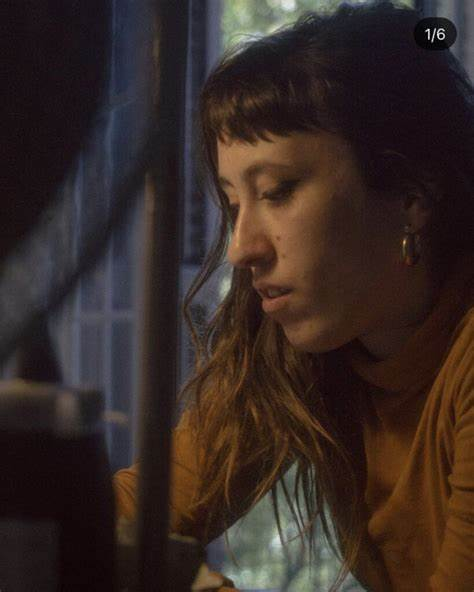

Clara S Prous

Formada en arte, ilustración e Historia del Arte, Prous recuerda haber dibujado desde niña; también conoce bien el 3D y la postproducción de vídeos, ha ilustrado portadas de discos y colaborado en fanzines y blogs. Su implicación cada vez mayor en el terreno pictórico ha tenido que ver con su deseo de levantar la mirada de una pantalla: "Estudié Ilustración, y como pensaba que no me ganaría la vida con eso, hice un curso de especialización en 3D y postproducción, y me fui a Bélgica a trabajar con una beca. Ahí hacía mucho frío, y después de salir de trabajar me iba a casa y estaba en el ordenador."